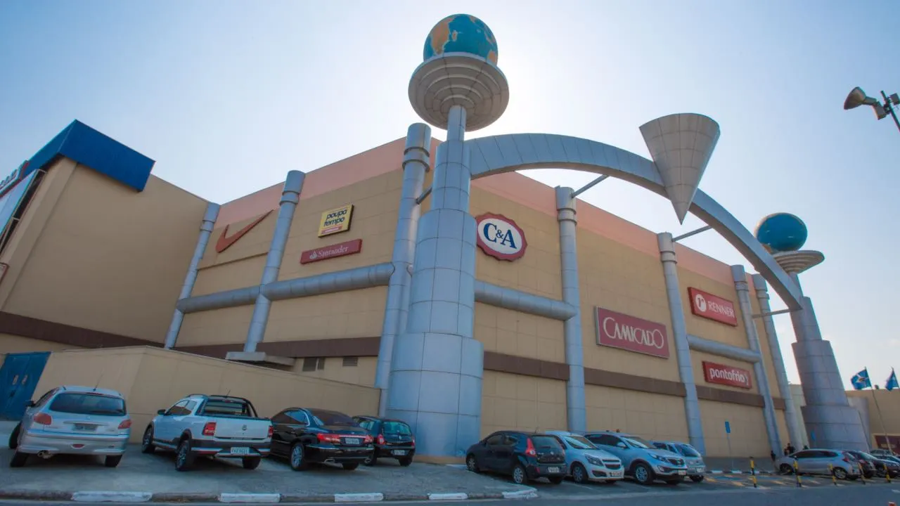
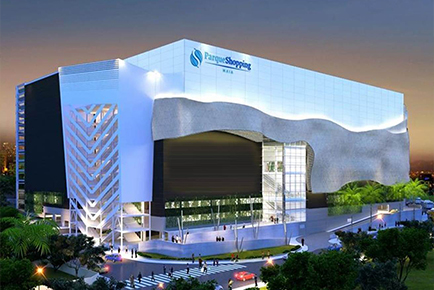
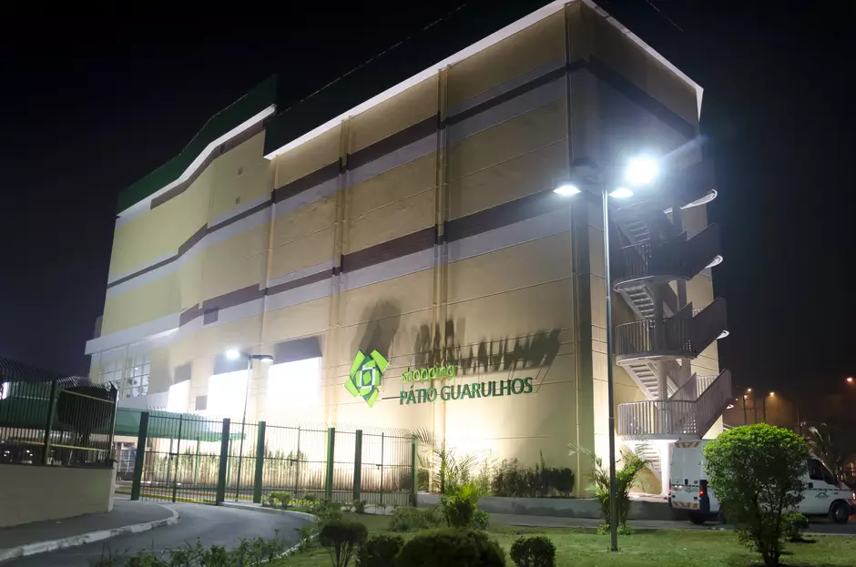
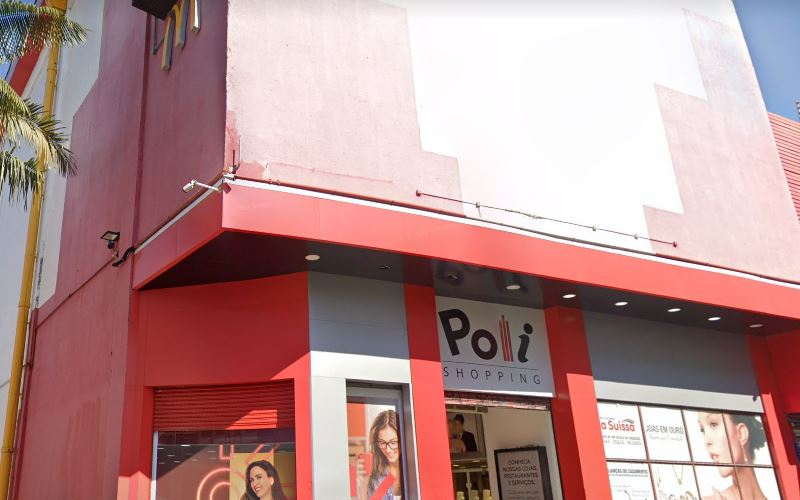
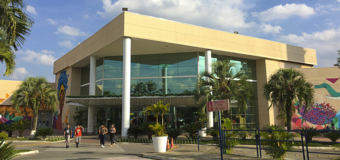

MINHA CIDADE GUARULHOS
SHOPPINGS

Um dos pontos mais famosos de Guarulhos e região, o Internacional Shopping foi inaugurado em 12 de novembro de 1998 e hoje conta com operações dos mais diversos segmentos.
Com lojas dos mais diversos segmentos, o Shopping conta grandes marcas, tais como Outback, Bacio di Latte, C&A, Marisa, Riachuelo, Renner, Pernambucanas, Ri Happy, Lojas Americanas, Calvin Klein, Camicado, Mercado Extra, Magazine Luiza, Casas Bahia, Ponto, Besni, Daiso, Mega Store Cacau Show, uma unidade da academia Smart Fit, entre outros. O empreendimento possui ainda uma ampla Praça de Alimentação, com opções para todos os gostos e idades.
O Shopping possui diferenciais que conquistam toda a família, como o NeoGeo Family Parque, um dos maiores parques de entretenimento indoor do Brasil, com mais de 4.500 m² e mais de 250 atrações, Bolix, com 24 pistas exclusivas, além de equipamentos modernos que garantem o conforto e a diversão do público. Outro atrativo é o complexo do Cinemark, o maior do país em quantidade de assentos: 4.031, divididos em 15 salas.
Endereço: Rua Engenheiro Camilo Olivetti, 295 - Vila Itapegica, Guarulhos - SP, 07034-010
Telefone: (11) 2414-5000

Inaugurado em abril de 2015, foi pensado para atender os guarulhenses mais exigentes e criar um novo referencial de qualidade na cidade.
O Parque Shopping Maia está localizado na segunda maior cidade do Estado de São Paulo, Guarulhos, que possui mais de 1.300 milhão de habitantes (IBGE 2018).
Inserido estrategicamente em um bairro de forte desenvolvimento e próximo ao Bosque Maia e a diversos empreendimentos residenciais de alto padrão, o Parque Shopping Maia foi desenvolvido para atender um público exigente que busca um mix variado e democrático, incluindo também marcas premium, em um ambiente tranquilo e confortável.
O shopping tem quatro pavimentos interligados por vãos iluminados por claraboias e uma fachada inovadora e arrojada, que proporciona uma nova experiência visual no seu entorno.
Endereço: Av. Bartolomeu de Carlos, 230 - Jardim Flor da Montanha, Guarulhos - SP, 07097-420
Telefone: (11) 2485-1600

O Shopping Pátio é um centro comercial brasileiro inaugurado em 1999, pelo Grupo Malzoni, na região central da cidade de São Paulo, no bairro Higienópolis. Com o tempo, o Shopping foi se espalhando pelas cidades.
Bonito, grandioso e, acima de tudo, moderno. O projeto do Shopping Pátio Guarulhos reúne o que existe de melhor em tendências arquitetônicas e de varejo. Possui uma fachada panorâmica, corredores espaçosos, lojas bem dimensionadas e uma infraestrutura completa de serviços.
Endereço: Av. Rosa Molina Pannocchia, 331 - Vila Rio de Janeiro, Guarulhos - SP, 07124-543
Telefone: (11) 2458-8100

Inaugurado em 23 de novembro de 1989, o Poli Shopping foi o primeiro a abrir as portas em Guarulhos. Ele também foi o primeiro do grupo General Shopping Brasil, hoje com 17 empreendimentos espalhados pelo País. Ao longo dos anos, o empreendimento tornou-se um shopping de conveniência, acessível e prático para quem passa pela rua Dom Pedro e arredores, mas no passado, o Poli teve cinema e até boliche. A praça de alimentação é um dos principais atrativos do estabelecimento e, além da área de alimentação, conta com 42 lojas, como CVC, O Boticário, Quiver, Cacau Show, entre outras marcas renomadas, distribuídas em 4.527m².
Endereço: R. Dom Pedro II, 178 - Centro, Guarulhos - SP, 07011-003
Telefone: (11) 2463-9360

Foi inaugurado em 2005 e se tornou um importante destino de compras e lazer na região. O shopping foi construído em uma área de aproximadamente 35.000 metros quadrados e possui uma grande variedade de lojas, restaurantes, cinemas e outras opções de entretenimento.
O Shopping Bonsucesso se estabeleceu como um importante centro comercial em Guarulhos, proporcionando uma variedade de opções de compras, alimentação e entretenimento para os moradores locais e visitantes. Sua localização estratégica e a constante busca por atualizações e melhorias garantem uma experiência agradável aos seus frequentadores.
Endereço: Estr. Pres. Juscelino K. de Oliveira, 5308 - Jardim Albertina, Guarulhos - SP, 07252-000
Telefone: (11) 2489-9690
© 2023 Cidade de Guarulhos. Todos os direitos reservados.